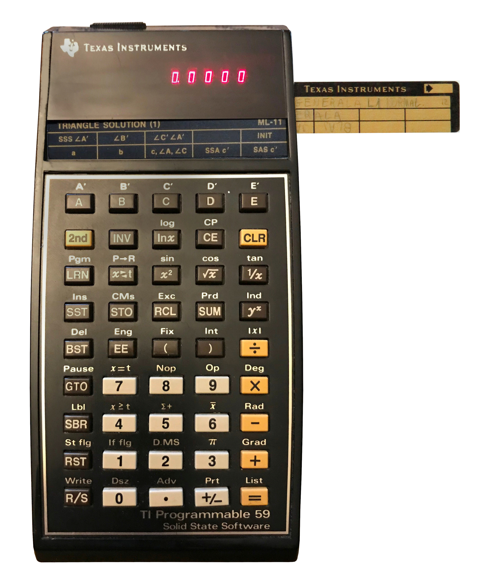
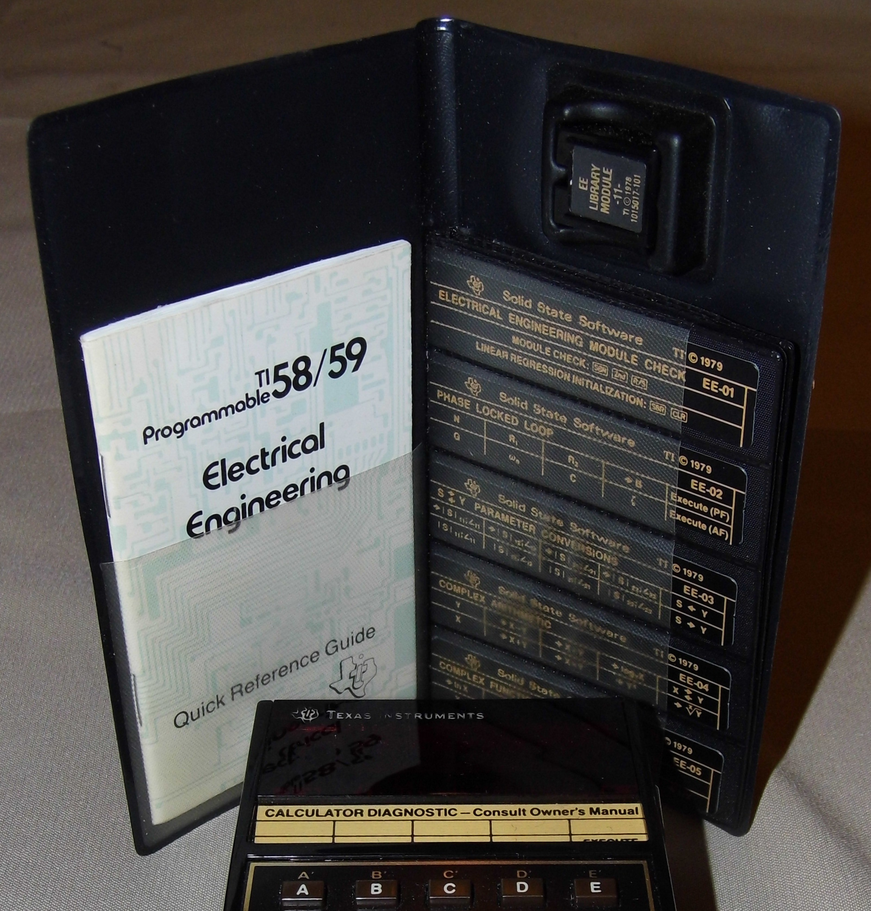
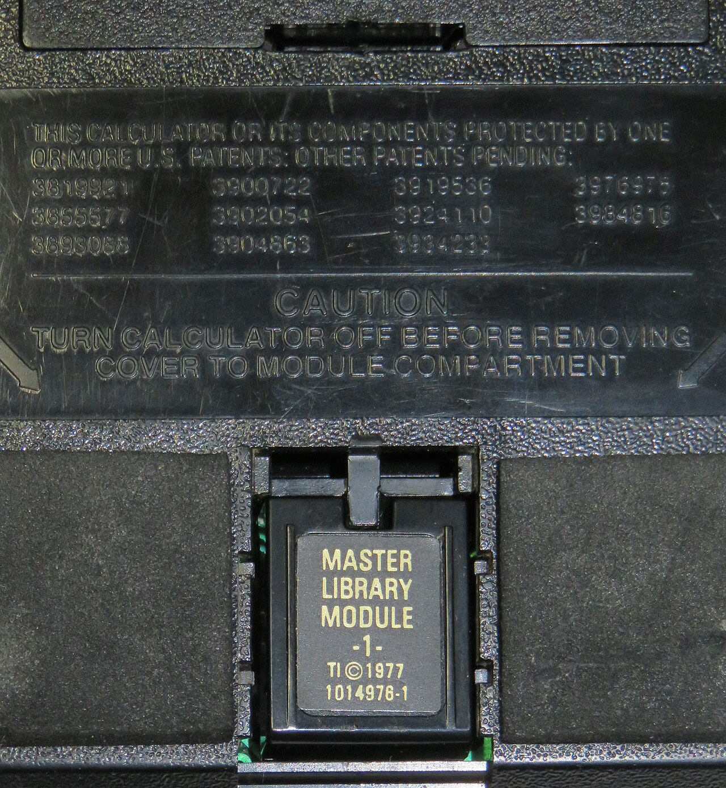
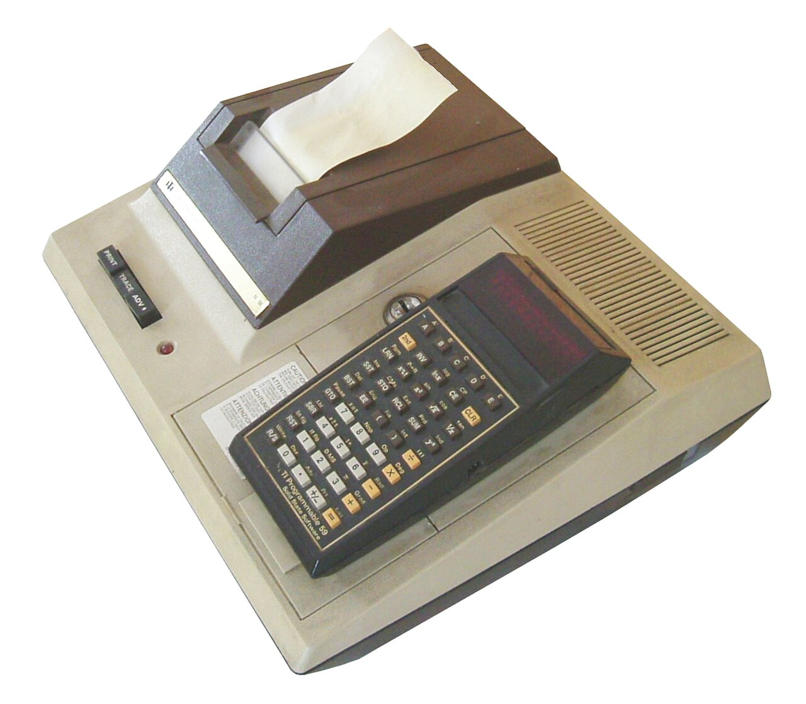

TI-59
The programmable calculator whose programs were physical cards you slid into the machine

Overview
Introduced May 24, 1977 at a suggested retail price of $299.95, the Texas Instruments TI-59 was the flagship of TI's second generation of programmable calculators. It had a 10-digit red LED display, used TI's Algebraic Operating System (AOS) parenthesized infix entry, and was built from the TMS0500 chip family — a TMC0501 arithmetic chip plus scanning ROMs, RAM chips, and a dedicated TMC0594 Magnetic I/O chip that drove the card reader. Its memory partition was adjustable between 960 program steps (with zero memories) and 100 data registers (with 160 program steps), and its keystroke programming language was Turing-complete. Programs were stored on small magnetic cards (up to 480 steps per card) read and written through a slot in the calculator's side; programs also came in removable "Solid State Software" ROM modules holding up to 5,000 steps, the first handheld calculators to use such modules. The Master Library module with 25 programs shipped in the box, and dozens more application modules followed.
The interaction model is the museum's point of interest: the TI-59 is the clearest mass-market expression of the idea that your program is a physical object. The machine recorded your keystrokes into memory, and to keep a program you slid a magnetically striped card through a slot in the calculator's side — the card was the software. And then the design doubled the idea: the card you just read also slipped into the gap between the display and the keyboard, where its printed side served as the legend telling you what the five user-defined keys A–E (and their shifted A'–E' forms) did in the loaded program. Storage medium, documentation, and interface label were the same strip of plastic.
Deep dive
The TI-59's magnetic cards were a triple-use medium. Sliding a card through the side reader loaded or saved a program (the machine's motor pulled the card through; one quarter of memory was stored on each side). The card's top surface was left writable, so the programmer could hand-write the program name and notes. And once read, the card slipped into a slot between the display and the keyboard, where its printed side became the live legend for the five user-defined label keys A–E and their shifted A'–E' forms. Storage, manual, and interface label were the same physical strip of plastic — a compact, tactile answer to the problem of software documentation.
Programming the TI-59 meant simply switching to learn mode and pressing keys: the calculator recorded the keystroke sequence as the program, merging up to eleven keypresses into single instruction steps. It supported labels, conditional branches, loops (increment/decrement and skip on zero), indirect addressing, user flags, subroutines, and alphanumeric output through the PC-100 printer cradle. Because the language was Turing-complete, hobbyists wrote games — BYTE published "Darth Vader's Force Battle," a type-in program for the TI-58/59, in October 1980 — and professionals used it for everything from real-estate calculations to aviation. The TI-58 (no card reader, half the memory) was even used aboard the Hawker Harrier for stabilization during takeoff and landing.
TI packaged expertise as physical modules: the Solid State Software ROM cartridges, which plugged into a compartment on the calculator's back, ran directly from ROM so they did not consume the user's program memory. The Master Library (25 programs) was included; modules for statistics, real estate, investment, surveying, and aviation were sold separately, each shipping with plastic overlay cards that labeled the user-defined keys. From November 1977, TI also ran the PPX-59 (Professional Program Exchange): users submitted programs and bought back packs of magnetic cards by mail — software distribution as a physical, postal system, a decade and a half before the internet app store.
The TI-59 sat at the hinge where the calculator stopped being a calculating machine and became a pocket computer: Turing-complete, externally storable, expandable, with a printer, a program exchange, and a large community. It was available from 1977 through 1983, and institutions kept it longer — the Science Museum Group holds books of TI-59 program cards in its collection, and The Henry Ford holds a TI-59. It is the ancestor of every pocket computer and laptop that followed, and the last mass-market device where your program lived on a strip of plastic you could hold in your hand.
Team & pioneers
- Texas Instruments Manufacturer; TI Programmable 59 flagship of the TMS0500 building-block calculator line
- TI Professional Program Exchange (PPX-59) Started November 1977; mail-order distribution of programs on magnetic cards
Media



Sources
- Wikipedia — TI-59 / TI-58
- Datamath Calculator Museum — Texas Instruments TI-59
- Datamath Calculator Museum — TMC0594 Magnetic I/O chip
- Just Solve the File Format Problem — TI-59 magnetic card
- Science Museum Group collection — books of TI-59 programme cards
- The Henry Ford — Texas Instruments TI-59 calculator
- Byte Magazine, October 1980 — Darth Vader's Force Battle
- TI-59 home page (Dejan Ristanović)